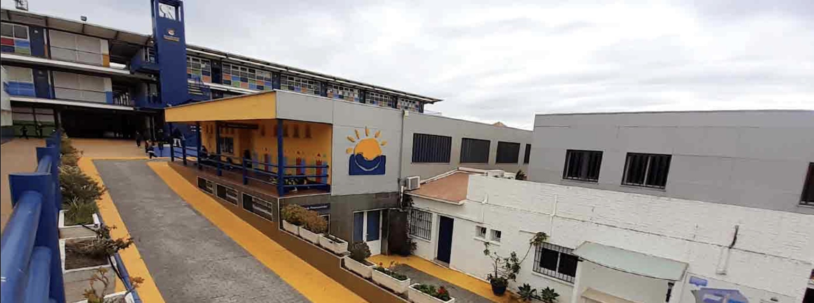
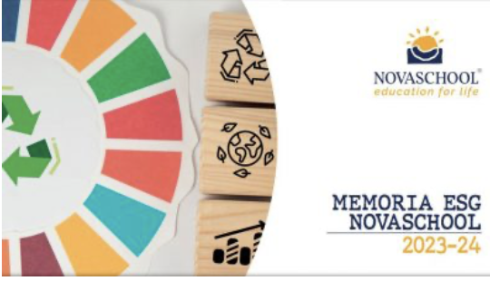
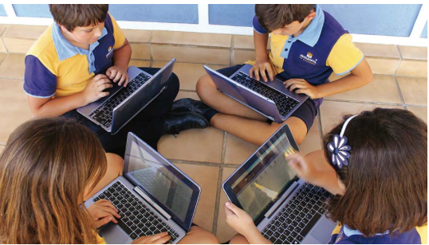
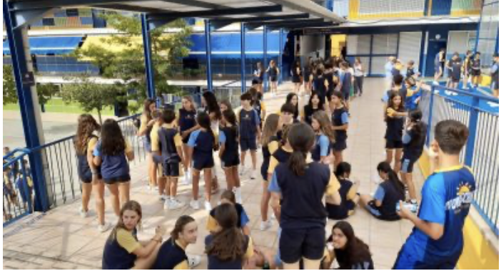
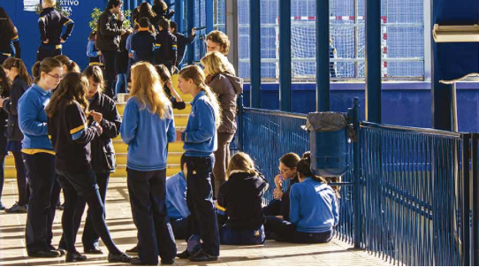
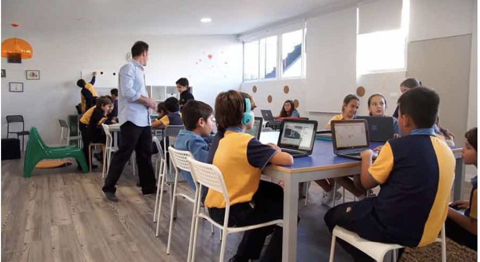
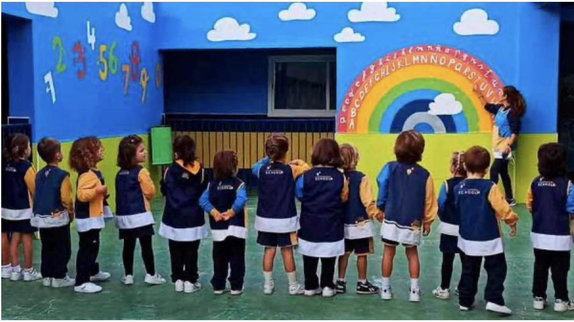
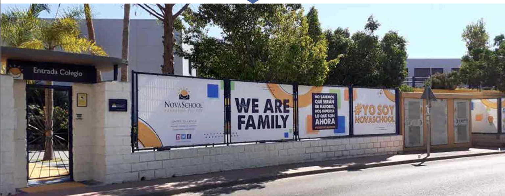

En Novaschool Añoreta acompañamos a cada alumno desde Infantil hasta Bachillerato con una propuesta educativa exigente, cercana e internacional, pensada para prepararles académica y personalmente para el futuro.
Nuestro proyecto educativo combina excelencia académica, atención personalizada, innovación y una visión internacional del aprendizaje para formar alumnos seguros, preparados y con criterio propio.

Visión pedagógica, identidad del centro y adaptación a nuevos tiempos.

Doble titulación y perfil académico con proyección exterior.

Transporte, comedor, actividades y oferta complementaria para familias.

Comunidad escolar, convivencia y sensación de campus vivo.



En Novaschool Añoreta entendemos la educación como un proceso completo, donde el desarrollo académico va unido al crecimiento personal, la autonomía, los idiomas y la preparación para un entorno global en constante cambio.
